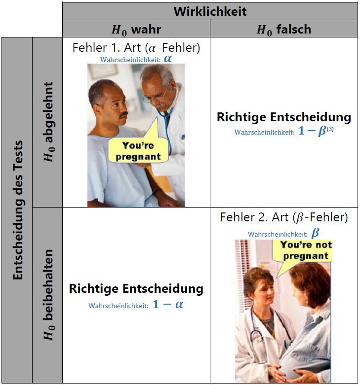

An dieser Stelle sollen einige Punkten der vorgestellten allgemeinen Vorgehensweisen etwas diskutiert werden.
In den Beispielen dieser Seite folgen wir immer der Standardprozedur:
lm(), gls(), glm(), lmer() etc.) aufstellenanova()) und danach für die signifikanten Behandlungsfaktorenemmeans()).Schritt 3 wird als logischer nächster Schritt angesehen, da wir nach der ANOVA lediglich wissen, dass es signifikante Unterschiede zwischen Behandlungen gibt. Wir wissen dadurch aber noch nicht, welche Behandlungen sich unterscheiden. Ob Schritt 3 tatsächlich nur auf Signifikanzen in Schritt 2 folgen darf, hängt sowohl von den Daten/dem Modell/der Testmethode ab, als auch von den Ansichten des Statistikers, der die Analyse durchführt.
Wenn der F-Test einer Behandlung in der ANOVA signifikant sein muss, bevor man einen t-test durchführen darf, spricht man auch vom protected LSD test. Wenn man paarweise Mittelwerte auch unabhängig vom Ergebnis des F-Tests mittels t-test Vergleich durchführen darf, spricht man dementsprechend auch vom Unprotected LSD test.
Es gibt mehrere Methoden um multiple Mittelwertvergleiche durchzuführen, z.B.:
Vorneweg soll gesagt sein, dass es keinen einzigen besten Test gibt, sondern, dass jeder der Tests verschiedene Vor- und Nachteile hat. Wir wollen erstmal nur zwei Methoden betrachten: Den multiplen t-Test und den Tukey-Test. Die Gegenüberstellung beider Methoden ist in folgender Tabelle zusammengefasst:
| . | Multipler t-test | Tukey Test |
|---|---|---|
| Alternative Namen | Fishers LSD-Test | HSD-Test Tukey-Kramer Methode |
| Grenzdifferenz Name | Least Significant Difference | Honestly Significant Difference |
| GrenzdifferenzFormel | Kapitel 4.5.1 Statistikskript | Kapitel 4.5.3 Statistikskript |
| Fehler 1. Art (\(\alpha\)-Fehler) wird eingehalten für | den einzelnen Vergleich - “vergleichsbezogen” | Die Gesamtheit aller Vergleiche - “versuchsbezogen” |
| Korrigiert der Test dafür, dass es mehrere Vergleiche gibt? | Nein | Ja |
Beide Tests berechnen eine Grenzdifferenz, an der dann die Differenzen zwischen den Behandlungsstufen-Mittelwerten gemessen werden. Sind letztere größer als die Grenzdifferenz, gelten sie als statistisch signifikant.
Was ist also der Unterschied zwischen mutliplem t-test und Tukey Test? Der Unterschied liegt in ihrer Umgangsweise mit dem Fehler 1. Art, auch \(\alpha\)𝛼-Fehler genannt (siehe dazu Kapitel 3.13 Statistikskript). Als kurze Zusammenfassung: Statistische Tests sind nie perfekt und es können Fehler passieren, sodass das Ergebnis des Tests eventuell nicht die Wahrheit abbildet. Es gibt zwei Arten von Fehlern, die passieren können: Die Nullhypothese ist eigentlich wahr, wird aber vom Test fälschlicherweise verworfen (Fehler 1. Art) oder die Nullhypothese ist eigentlich falsch, wird aber vom Test fälschlicherweise beibehalten (Fehler 2. Art) – siehe dazu die Tabelle.

Die Wahrscheinlichkeit, dass solche Fehler passieren (Irrtumswahrscheinlichkeit), kann man kontrollieren, aber ganz verhindern kann man es nicht. Die beiden Fehler bedingen sich auch noch gegenseitig, sodass der eine größer wird, wenn man den anderen klein halten möchte. Dies ist einer der Gründe warum oft \(\alpha\) = 0.05 gewählt wird. Es bedeutet einfach, dass die Wahrscheinlichkeit, dass dem Test ein Fehler 1. Art unterläuft bei 5% liegt und dies scheint in den meisten Fällen ein guter Kompromiss zu sein.
Der multiple t-Test fixiert die Wahrscheinlichkeit für einen Fehler 1. Art (= 𝛼) pro paarweisem Vergleich. Das heißt für jeden einzelnen Vergleich gilt, dass die Wahrscheinlichkeit einen \(\alpha\)𝛼-Fehler zu begehen nicht über 𝛼 = 5% liegt. Andersherum heißt das, dass wir mit 95% Wahrscheinlichkeit eine Nullhypothese korrekterweise beibehalten. Würden wir also beispielsweise genau 100 paarweise Vergleiche durchführen in denen in Wirklichkeit die Nullhypothese gilt, würden wir erwartungsgemäß leider 5 mal ein falsches Testergebnis erhalten.
Man könnte sich auch fragen wie hoch die Wahrscheinlichkeit liegt, dass wir bei allen paarweisen Vergleichen die Nullhypothese korrekterweise beibehalten. Bei den 100 Vergleichen wäre das \((1-\alpha)^{100}=0.95^{100}=0,006=0,6%\). Demnach beträgt die Wahrscheinlichkeit bei den 100 Vergleichen mindestens einen \(\alpha\)𝛼-Fehler zu begehen in diesem Fall erschreckende 99,4%. Dieses Problem wird „Multiple comparison problem“ oder auch „Alphafehler-Kumulierung“ genannt. Sicherlich sind 100 Vergleiche eine extremes Beispiel, doch es muss klar sein, wie schnell die Anzahl der Vergleiche in Abhängigkeit von der Anzahl der zu vergleichenden Behandglungsstufen steigt. Schon bei 4 Behandlungsstufen (z.B. 4 Sorten) gibt es 6 Vergleiche, sodass \((1-\alpha)^{6}=0.95^{6}=0,735=73,6%\). Also liegt selbst hier die Wahrscheinlichkeit mindestens einen \(\alpha\)-Fehler zu begehen schon bei 26,5%.
Im Gegensatz zum multiplen t-Test korrigiert der Tukey-Test dafür, dass es mehrere Vergleiche gibt. Er fixiert die Wahrscheinlichkeit für einen Fehler 1. Art pro Versuch - also über alle paarweisen Vergleiche. Die Grenzdifferenz wird schlichtweg so berechnet, dass die Wahrscheinlichkeit im ganzen Versuch mindestens einen \(\alpha\)𝛼-Fehler zu begehen eben nicht bei 99,4% oder 26,5% liegt, sondern den Wert von 5% nicht überschreitet.
Aus diesem Grund ist die HSD stets größer als die LSD, sodass mit dem Tukey-Test weniger Behandlungsunterschiede als signifikant eingestuft werden als mit dem multiplen t-Test. Es wird quasi „auf Nummer sicher gegangen um weniger Fehler zu begehen“. Man spricht deshalb davon, dass der Tukey-Test konservativer ist als der multiple t-Test.
Nachdem dies nun alles besprochen wurde, hätte man gerne eine klare, finale Faustregel zur Vorgehensweise. Wenn es allerdings eine gäbe, hätten wir uns diesen ganzen Exkurs auch sparen und nur den besseren der beiden Tests anschauen können. Stattdessen hier zum Abschluss das Zitat aus Kapitel 4.5.2 des Statistikskripts:
„Es ist eine schwierige Frage, welche der beiden Irrtumswahrscheinlichkeiten eingehalten werden soll. Es gibt hierzu kaum eine einfache Regel. Aussagen, die unter Einhaltung der versuchsbezogenen Irrtumswahrscheinlichkeit getroffen werden, sind stärker abgesichert. Allerdings ist diese Absicherung nicht umsonst: Sie geht bei Tests zu Lasten eines größeren Fehlers 2. Art (Alternativhypothese fälschlicherweise verworfen). […] Eine denkbare Strategie besteht darin, zu Beginn eines Projektes, wenn noch nach interessanten, weiter zu verfolgenden Zusammenhängen gesucht wird, eher vergleichsbezogen zu testen, während zu Projektende eine stärkere Absicherung durch versuchsbezogene Tests angestrebt wird.“